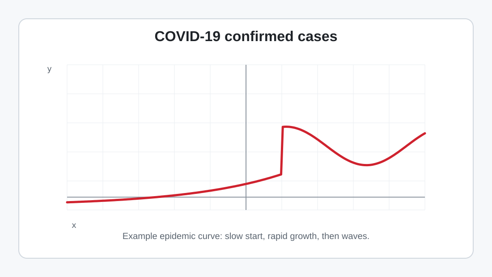

Forecasting & Sequence Data (Time Series)
A standalone tutorial on what sequence data is, how to shape it for ML, what “forecasting” really means, and how to avoid the most common multi-step forecasting mistake: data leakage through future inputs.
Sequences are not just “lots of rows.” They have order. The value at time \(t\) is often related to values at \(t-1, t-2, \dots\). Forecasting is the discipline of exploiting that ordered dependence to predict values that have not happened yet.
1) What counts as sequence data?
Time series: values indexed by time
- Finance: prices, returns, volume, spreads sampled every minute/day.
- Weather: temperature, rain, humidity, pressure, wind over time.
- Audio: a waveform is amplitude measured over time.
- Sensor streams: accelerometers, ECG, machines, IoT, clickstreams, logs.
The sequence axis is the time axis: rows arrive in order and nearby rows tend to be statistically related.
Example time series plot

Text is also sequential, but with discrete tokens
A sentence is a sequence of tokens. Older ML often used bag-of-words: convert a document into a word-count vector and ignore order. That makes standard classifiers easy to use, but it destroys the sequential signal.
Why bag-of-words can fail: “dog toy” and “toy dog” have the same word counts but different meaning.
Time-series forecasting and language modeling are not identical, but they share one deep idea: the next output depends on ordered context. Chapter 10 uses recurrent state for ordered context; Chapter 11 replaces that with attention.
2) What makes time series different from ordinary tabular ML?
Rows are not exchangeable
In ordinary tabular ML, you often treat rows as independent examples and shuffle them before training. In forecasting, shuffling can destroy the question. Training on 2025 and validating on 2020 is not a forecast.
The split must respect time: train on the past, validate/test on the future.
The data-generating process can change
Time series can have trend, seasonality, cycles, structural breaks, missing periods, outliers, and changing variance. A model trained on one regime can fail when the future regime changes.
This is why backtesting over multiple forecast origins is often more trustworthy than one lucky split.
3) How to represent sequence data: \(N \times T \times D\)
For non-sequential data you are used to \(X \in \mathbb{R}^{N \times D}\): samples by features. For sequences, we add a time axis:
\[ X \in \mathbb{R}^{N \times T \times D} \]
- \(N\): number of samples. Each sample is one sequence window.
- \(T\): number of time steps in the window. This is also called lookback, context length, or lag length.
- \(D\): number of features measured at each time step.
Concrete examples so \(N\), \(T\), and \(D\) do not get mixed up
- GPS commute tracking: each trip is one sample (\(N\)); each timestamp is one step (\(T\)); latitude/longitude means \(D=2\).
- Single stock price: \(D=1\). If you slice the long series into windows of length \(T\), each window is one sample.
- 500 stocks: \(D=500\). Each time step contains a 500-dimensional market snapshot.
- Brain electrodes: \(D=\) number of electrodes. With 1 kHz sampling for one second, \(T=1000\).
The axis order \(N \times T \times D\) is common in Python sequence modeling when `batch_first=True`.
4) Forecast origin, lookback, target, and horizon
Forecasting starts from a forecast origin: the last time point you are allowed to know. You choose a lookback \(T\), then predict one or more future steps.
- Lookback \(T\): how many past steps the model sees.
- Target: the value you ask the model to predict.
- Horizon \(H\): how far into the future you want predictions.
If steps are hours and you forecast 7 days hourly, \(H = 7 \times 24 = 168\). If steps are days and you forecast the next 5 days, \(H=5\).
5) Turning a long series into supervised learning windows
A model such as linear regression expects input-output pairs. A raw time series is one long ordered list. Windowing converts the long list into many supervised examples.
If the full series has length \(L\) and you use lookback \(T\) to predict the next value, the number of one-step training windows is:
\[ \text{windows} = L - (T+1) + 1 = L - T \]
Why \(T+1\)? Because each supervised example needs \(T\) input values plus one target value.
| Raw series | Lookback \(T=3\) | Target |
|---|---|---|
| [10, 12, 13, 15, 18, 20] | [10, 12, 13] | 15 |
| [10, 12, 13, 15, 18, 20] | [12, 13, 15] | 18 |
| [10, 12, 13, 15, 18, 20] | [13, 15, 18] | 20 |
import numpy as np
def make_supervised_1d(series: np.ndarray, lookback: int):
"""
Converts a 1D time series into supervised learning data:
X[i] = series[i : i+lookback]
y[i] = series[i+lookback]
"""
series = np.asarray(series, dtype=np.float32)
L = len(series)
if L <= lookback:
raise ValueError("series is too short for the chosen lookback")
X = []
y = []
for i in range(L - lookback):
X.append(series[i : i + lookback])
y.append(series[i + lookback])
return np.stack(X), np.asarray(y)
x = np.arange(10, dtype=np.float32) # [0..9]
X, y = make_supervised_1d(x, lookback=3)
print(X.shape, y.shape) # (7, 3) (7,)6) A “dumb but great” baseline: linear regression as an AR model
Before you reach for RNNs, use a simple baseline. For a 1D time series (\(D=1\)), treat the previous \(p\) values as features and use linear regression.
\[ \hat{x}_t = w_0 + w_1 x_{t-1} + w_2 x_{t-2} + \dots + w_p x_{t-p} \]
In statistics this is an autoregressive (AR) model: the series is predicted from its own past. In ML language, it is a supervised learning model built from lag features.
Persistence baseline
The simplest forecast is \(\hat{x}_{t+1}=x_t\): tomorrow equals today. This is surprisingly hard to beat for some noisy series and should be your first sanity check.
Seasonal naive baseline
If the series repeats every \(s\) steps, forecast \(\hat{x}_{t+1}=x_{t+1-s}\). For hourly daily seasonality, \(s=24\); for daily weekly seasonality, \(s=7\).
7) Exogenous variables: what is known in the future?
Many forecasts use extra features besides the target’s own past. These are often called exogenous variables or covariates.
| Feature type | Examples | Can you use it for future horizons? |
|---|---|---|
| Known in advance | day of week, holidays, planned price, calendar month | Yes, if it is truly known at forecast time. |
| Observed only later | future sales, future weather observations, future demand, future sensor values | No, unless you separately forecast it first or use a scenario. |
Leakage rule: every input feature for a forecast horizon must be information you would actually have at the forecast origin.
8) The most common forecasting mistake: leaking future inputs
The wrong way for multi-step forecasting:
Predicting day 5 using inputs that include the true day 4 value, when day 4 is not known at forecast time. This makes the plot look nice but it is not a valid multi-step forecast.
The correct recursive / rolling forecast:
When you need multiple steps ahead, feed the model’s own previous predictions back as inputs. This matches reality: once you step into the future, you no longer have ground-truth observations.
9) Forecasting strategies for \(H>1\)
| Strategy | How it works | Tradeoff |
|---|---|---|
| Recursive | Train one-step model; roll it forward by feeding predictions back in. | Simple and uses all one-step data, but errors compound. |
| Direct | Train a separate model for each horizon step: one for \(t+1\), one for \(t+2\), etc. | Avoids recursive feedback, but needs more models and less data per horizon. |
| Multi-output | Train one model to output all \(H\) future steps at once. | Can learn horizon relationships, but the output layer and loss must match the forecast task. |
Chapter 9 focuses on the recursive version because it exposes the core forecasting issue most clearly: after the origin, real future observations are unavailable.
10) Minimal, correct forecasting code: baseline AR with recursion
Train a linear model (scikit-learn style) and forecast recursively
import numpy as np
from sklearn.linear_model import LinearRegression
def fit_ar_linear(train_series: np.ndarray, lookback: int) -> LinearRegression:
X_train, y_train = make_supervised_1d(train_series, lookback)
model = LinearRegression()
model.fit(X_train, y_train)
return model
def recursive_forecast_1d(model, history: np.ndarray, lookback: int, horizon: int):
"""
history: last observed values, at least lookback long.
Returns: horizon predictions [xhat(t+1), xhat(t+2), ...].
"""
hist = list(np.asarray(history, dtype=np.float32))
if len(hist) < lookback:
raise ValueError("history must contain at least lookback values")
preds = []
for _ in range(horizon):
x_in = np.array(hist[-lookback:], dtype=np.float32).reshape(1, -1)
y_hat = float(model.predict(x_in)[0])
preds.append(y_hat)
hist.append(y_hat) # key step: feed prediction back in
return np.array(preds, dtype=np.float32)
series = np.sin(np.linspace(0, 10*np.pi, 500)).astype(np.float32)
train, test = series[:400], series[400:]
lookback = 20
horizon = 30
ar = fit_ar_linear(train, lookback=lookback)
history = train[-lookback:]
preds = recursive_forecast_1d(ar, history, lookback=lookback, horizon=horizon)
print("First 5 predictions:", preds[:5])Important: this evaluates a real forecast. After the split point, the model does not receive true future target values as inputs.
11) Evaluation: one split is a start, backtesting is better
A single chronological train/test split is better than random splitting, but it can still be lucky or unlucky. In production forecasting, you often use walk-forward backtesting: choose several forecast origins, forecast the next \(H\) steps from each origin, and aggregate the errors.
- MAE: average absolute error; easy to interpret in original units.
- RMSE: penalizes large errors more strongly.
- MAPE: percentage error; fragile when true values are near zero.
- MASE / scaled error: compares against a naive baseline, useful across series with different scales.
12) Where RNNs fit next
This tutorial intentionally starts with the simplest correct approach: an autoregressive baseline. RNNs and later sequence models help when relationships are nonlinear, depend on longer context, or involve high-dimensional inputs.
Chapter 10 replaces a fixed lookback vector with recurrent hidden state. It then uses translation to show the same step-by-step idea in text: tokens become embeddings, a decoder produces one output at a time, and autoregressive decoding feeds previous outputs back into the next step.
The data-shape thinking (\(N \times T \times D\)) and the “no future leakage” rule remain the same no matter how sophisticated the model becomes.
If the baseline evaluation is wrong, you cannot trust the advanced model evaluation either.
Checklist: a correct forecasting setup
- Define the horizon \(H\): one-step prediction and multi-step forecasting are different tasks.
- Choose the lookback \(T\): enough context to model the pattern without unnecessary noise.
- Split by time: train on the past, validate/test on the future.
- Fit preprocessing on training only: scaling, imputation, feature selection, and hyperparameters must not see the future period.
- No leakage: future target values cannot be used as future inputs.
- Start with baselines: persistence, seasonal naive, and AR/linear regression before complex sequence models.